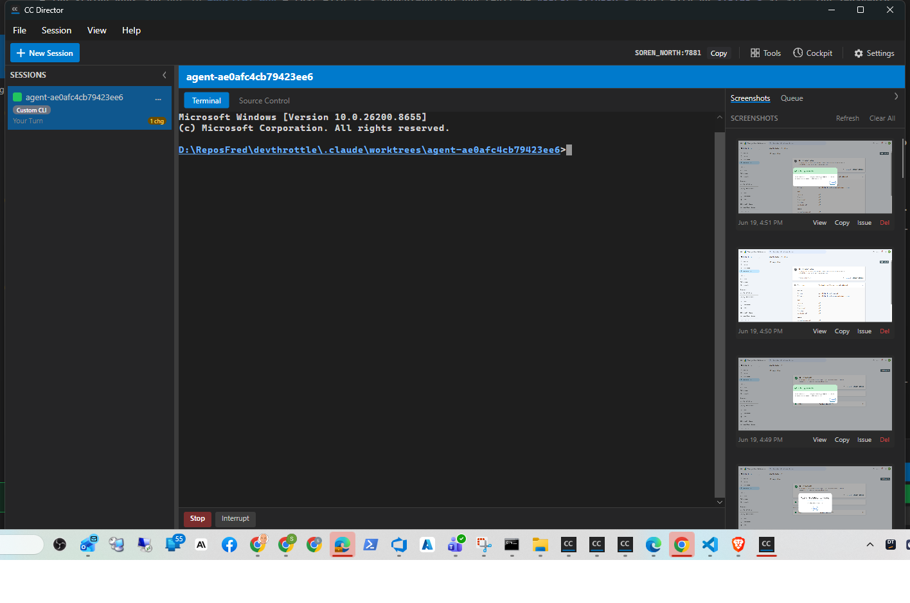
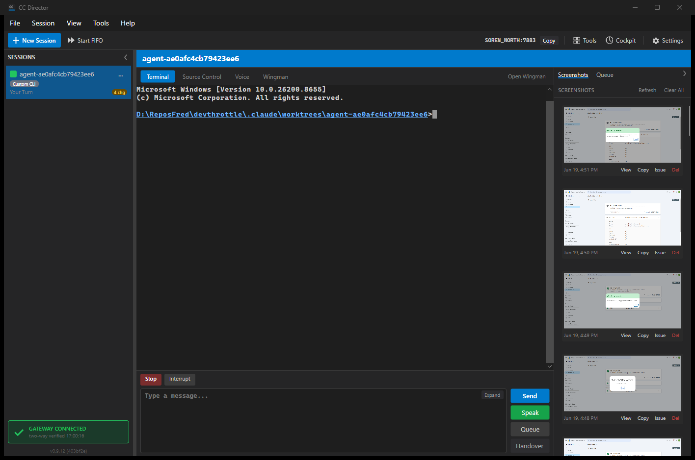

For the version one default install (issue 357), the desktop Voice tab button, Wingman
tab button, and the "Open Wingman" button are now hidden behind the existing
AlphaMode flag (default off). A standard install never shows them. Setting
alpha_mode: true in configuration brings them back for internal testing. The
Voice/Wingman back-end code, panels, and per-session Wingman state are untouched - this is
desktop entry-point visibility only.
All edits are in src/CcDirector.Avalonia/MainWindow.axaml.cs.
ApplyAlphaFeatureVisibility() (the existing alpha-gating method
that already hid BtnStartFifo and BtnHandover) to call a new
centralized method, ApplyVoiceWingmanTabVisibility().ApplyVoiceWingmanTabVisibility() - the single source of truth for
the three buttons. Alpha mode is a hard gate, logically combined (AND) with the
pre-existing conditions:
TabBarOpenWingmanButton visible when alpha AND a session is active.VoiceTabButton visible when alpha AND a session is active.WingmanTabButton visible when alpha AND a session is active AND
the session's Wingman experience is enabled (restoring the original
WingmanTabButton.IsVisible = vm.Session.WingmanEnabled behavior,
now AND-ed with the alpha gate).ToggleSessionWingman.VoiceTabButton_Click,
WingmanTabButton_Click) to ignore activation when their button is hidden.OnAlphaModeChanged handler already calls
ApplyAlphaFeatureVisibility(), which now runs the centralized logic, so
toggling alpha_mode re-gates the buttons live without a restart.PASS. dotnet build src/CcDirector.Avalonia/CcDirector.Avalonia.csproj
- Build succeeded, 0 Warnings, 0 Errors (no project file changes; no audit-suppression
override needed for the Avalonia project). Full solution build also succeeded with 0
Warnings, 0 Errors.
PASS. dotnet test src/CcDirector.Avalonia.Tests -
Passed, 66 of 66, 0 failed. No regressions. The visibility logic lives on the
MainWindow user-interface boundary, consistent with the existing
ApplyAlphaFeatureVisibility for BtnStartFifo/BtnHandover
(which also has no unit test), so the proof for this user-interface change is the
screenshots below.
Both screenshots were taken with the SAME active session, deliberately created with the per-session Wingman experience ENABLED, so the only difference is the alpha flag.
The session tab bar shows ONLY "Terminal" (active, highlighted) and "Source Control". There is NO Voice tab, NO Wingman tab, and NO "Open Wingman" button. Terminal is the active tab. This holds even though the active session has Wingman enabled, proving alpha is the hard gate. (Acceptance criteria 1 and 2.)

With the same session, the tab bar now shows "Terminal" (active), "Source Control", "Voice", and "Wingman" tabs, plus the "Open Wingman" button on the right. The other alpha features "Start FIFO" and "Handover" also appear, as expected. Terminal remains the active tab. (Acceptance criterion 3.)

The Director log for the alpha-on run shows the centralized method running at construction and again when the session became active:
[AlphaMode] Load: alpha_mode=True [MainWindow] ApplyAlphaFeatureVisibility: alphaFeatures=True [MainWindow] ApplyVoiceWingmanTabVisibility: alpha=True, hasSession=False, voice=False, wingman=False, openWingman=False [MainWindow] ApplyVoiceWingmanTabVisibility: alpha=True, hasSession=True, voice=True, wingman=True, openWingman=True
The same ApplyAlphaFeatureVisibility() ->
ApplyVoiceWingmanTabVisibility() path is what the AlphaMode.Changed
handler (Settings dialog toggle) invokes, so an in-window toggle re-gates the buttons live
without a restart.
alpha_mode: true into the shared configuration,
restarting the isolated slot, capturing, and then restoring the configuration to
alpha_mode: false (its original value, from a backup taken before the
change). The final state is alpha_mode: false.